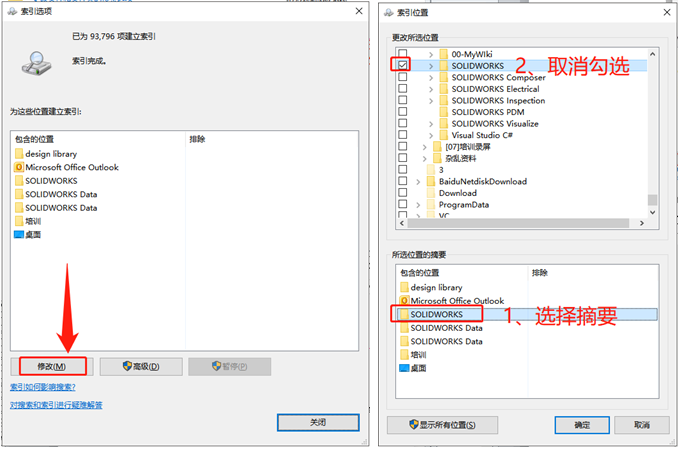

搜索路径无法修改
搜索路径可以帮助我们在指定的位置快速找到我们所需要的模型，SOLIDWORKS
搜索比其他搜索引擎要快，甚至我们可以使用关键字或者自定义属性来进行搜索，同时文件可以在右侧窗口预览，提高我们对零部件重用的效率。
（下图 1 是无设置的情况，下图 2 是设置后的情况）
问题
但是你在【系统选项-文件位置-搜索路径】尝试将需要建立索引时，却发现不能将文件夹位置进行设置添加。而且也不能删除现有的。
方法
为了解决该问题，我们需要修改系统的索引选项。打开【控制面板-索引选项】
选择修改，在所选位置的摘要里点击需要修改的对象，勾选（或取消勾选）即可建议（或断开）索引。
